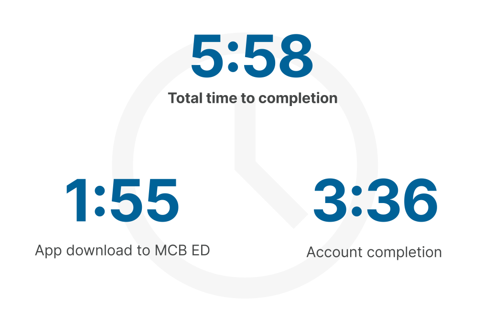
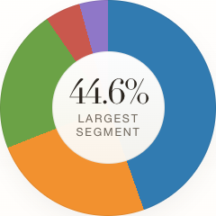
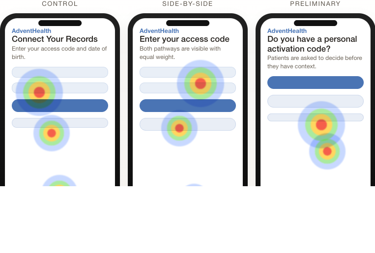
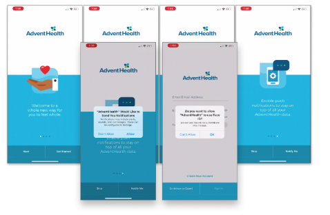
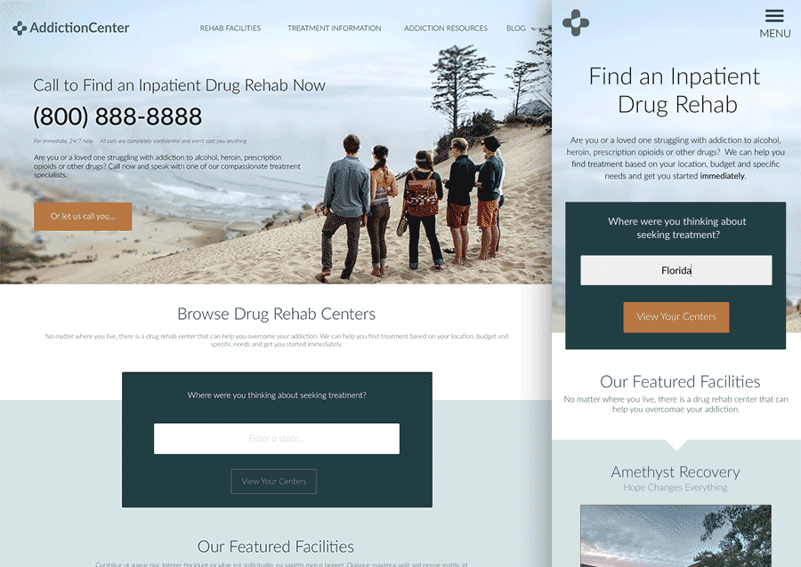

Research
Most of this work is in healthcare, and most of it is connected. The three AdventHealth studies in particular — telephony analysis, prototype testing, and ED timing — form a single arc. Each one answered a question the previous one raised.
ED Access Timing
A 5:58 median onboarding time in an ED context where stressed patients on poor connections were depending on nurses to troubleshoot registration.
I ran 10 proxy timing runs with detailed journey mapping to measure the full BYOD registration gauntlet and identify where friction was creating nurse dependency instead of patient independence.

The timing data revealed a mismatch between the registration model and the context — a design built for convenience-driven digital consumers, not patients in acute care facing network instability and stress.
Why Patients Call
"Can’t log in" turned out to be a symptom, not a root cause — hiding five compounding access-and-identity failure stages that only support staff could untangle.
I rebuilt the Five9 call categorization system from transcripts up because the agent-applied tags were too inconsistent to surface what was actually happening. The results mapped a lifecycle where each failure triggered retries that made the situation worse.

What the analysis revealed was not just that patients were calling — it was that the system had handed the burden of repair entirely to support staff, who became interpreters for failures the product itself couldn’t explain or resolve.
The Connect Records Study
A 45-participant between-subjects study that disproved its own hypothesis — showing the navigation was clear but patients didn’t understand what the code was or why connecting records mattered.
I tested three variants of the Connect Your Records flow — control, visibility-first, and decision-first — to see if clearer design would reduce support calls. All three were equally navigable, but the study revealed the barrier was deeper than visibility.

The most useful finding was often what the study didn’t prove: better design alone couldn’t solve the problem. The work redirected the team toward the upstream access-dependency issues that had emerged in the telephony analysis.
AdventHealth App Onboarding
At 171 seconds to reach the home screen — and more beyond that to connect records — the app was asking for commitment it hadn't yet earned.
I benchmarked AdventHealth's flow against six competing apps — from Amazon's 30-second sign-up to Teladoc's 420-second setup — and applied behavioral design principles to map where the experience was losing momentum rather than building it.

What the benchmarks revealed wasn't just that the flow was long — it was that the app sat in an uncomfortable middle: asking for more commitment than some flows, without the clearer payoff structure that made others worth the effort.
AI-Assisted Research Synthesis
I replaced a two-week manual synthesis process with an AI-assisted workflow, cutting time-to-insight to four days without losing rigor.
I introduced AI-assisted analysis to replace manual spreadsheet-heavy workflows in synthesis, helping reduce time-to-insight from roughly two weeks to four days.
This was less about tooling for its own sake and more about making research more useful to the teams depending on it. By building a lighter analysis workflow, I helped create faster decision cycles, support parallel studies, and improve consistency without losing rigor.
AddictionCenter.com Redevelopment
80% of competitor traffic came from mobile, but AddictionCenter was still desktop-heavy and pressure-driven. A mobile-first redesign resulted in 30% higher conversions and 18% more traffic.
I led a redevelopment that combined competitor analysis, content audit, audience surveys, and A/B testing to shift the site from pressure-dependent to self-directed research. The work started with a clear strategic constraint: if most people arrive on mobile, design for that reality first.

The challenge was making the site feel more trustworthy and self-directed without sacrificing the conversion focus that had built the business. Turns out those goals aligned — people made better decisions when they felt supported rather than pushed.
E2-D Hawkeye Training
A three-year enterprise training program that was projected to miss milestones by six months. A blended waterfall-plus-agile roadmap rebalanced the delivery and shipped three months early.
I led interface design and visual implementation across courseware and PC simulation for the E2-D Advanced Hawkeye program, managing a team of 10 artists while contributing 3D models, textures, and rendered environments directly.

Beyond the on-time delivery: the interface system proved durable enough to be adopted by other naval curricula, including Northrop's Triton program — a sign that the design-system thinking had solved a real problem beyond this single project.
Research Reports
These are the formal research artifacts that sat alongside my project work when a team needed to walk the findings together, revisit evidence quickly, or absorb a study outside the structure of a case study.
Let’s have a conversation.
If you’re working on a research question that’s hard to scope, hard to staff, or hard to communicate upward, I’d be glad to talk it through. The shape of the problem usually becomes clearer once we name it out loud.
A good conversation is usually a better start than a formal intake form.